Si no sabes qué pedir, pregunta a la Charo. Si la Charo no está, pide la tortilla.
Pulsa en cualquier producto para ver sus ingredientes y alérgenos.
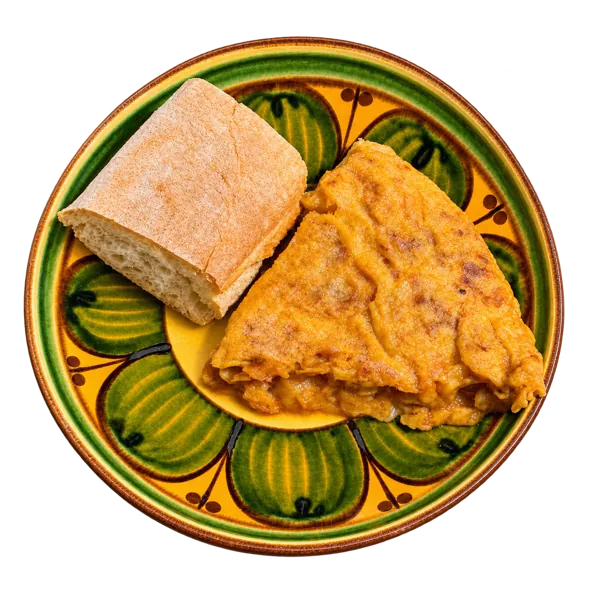
La tortilla de la Charo
5,50 €
Con cebolla, obvio. Con pan crujiente, obvio también. Solo para los más madrugadores.
La receta de siempre, cuajada al momento y jugosa por dentro. Se hace cada mañana y, cuando se acaba, se acaba. Por eso decimos que es solo para los más madrugadores.
Ingredientes
Huevos camperos
Patata
Cebolla pochada
Aceite de oliva virgen extra
Sal
Pan de masa madre
Alérgenos
Huevo
Gluten
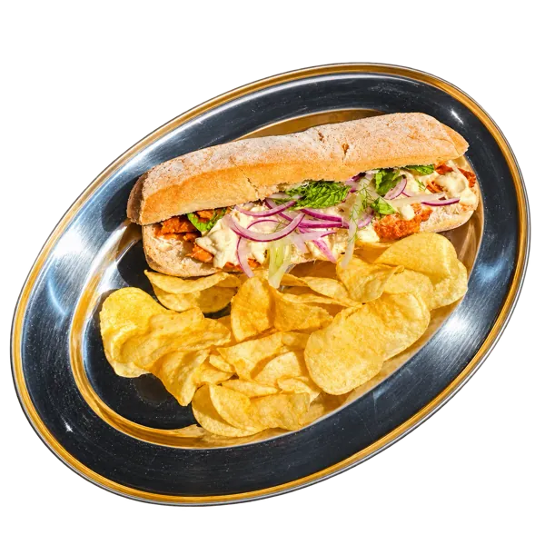
El Canarión
9,50 €
Pata asada como la de las fiestas del pueblo y un alioli cítrico que no pide permiso.
Un homenaje a los bocadillos de pata de las fiestas canarias: carne asada a fuego lento durante horas, ensalada fresca, queso y un alioli con limón y naranja. Viene con patatas.
Ingredientes
Pan de barra crujiente
Pata de cerdo asada
Lechuga y tomate
Queso tierno
Alioli cítrico (ajo, limón y naranja)
Patatas fritas
Alérgenos
Gluten
Leche
Huevo
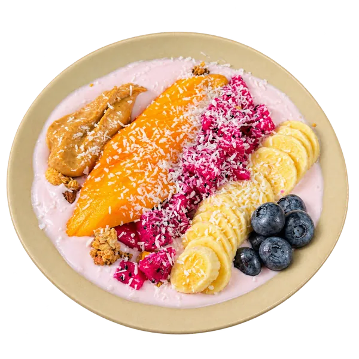
La Chismosa
8,50 €
Porque hoy te has levantado a correr y necesitas sentirte sano. Y contarlo.
El desayuno más comentado de la barra. Yogur batido con fruta fresca de temporada, coco y una cucharada generosa de crema de cacahuete. Ideal para quien quiere cuidarse… y que se entere todo el barrio.
Ingredientes
Yogur natural batido
Mango
Pitaya
Plátano
Arándanos
Coco rallado
Crema de cacahuete
Granola de avena
Alérgenos
Leche
Cacahuetes
Gluten
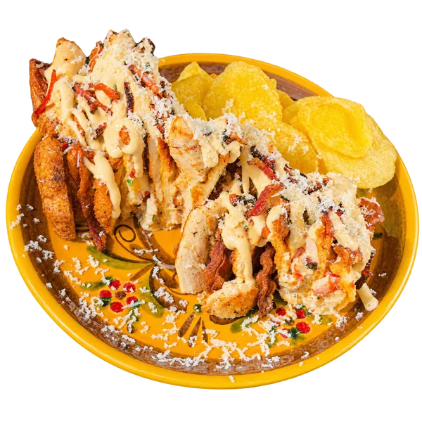
El Club de Paula
10,50 €
Lo que aprendió Paula de enamorarse de un canario: que el queso, cuanto más, mejor.
Nuestro sándwich club con acento canario: pollo, ensalada fresca, guanciale crujiente y mucho queso de Valsequillo. Se sirve con patatas.
Ingredientes
Pan de molde tostado
Pollo a la plancha
Ensalada fresca
Guanciale crujiente
Queso de Valsequillo
Mayonesa de la casa
Patatas chips
Alérgenos
Gluten
Leche
Huevo
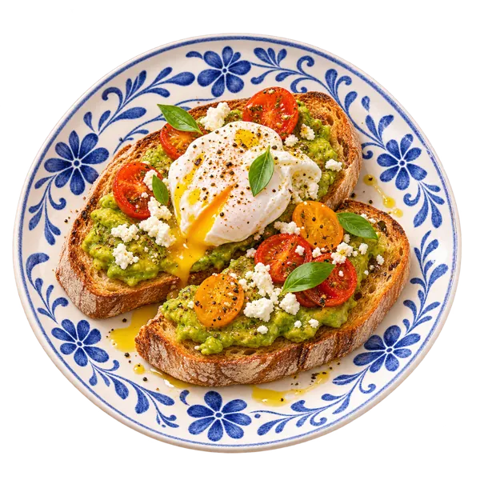
El moderno del barrio
9,00 €
Sí, tenemos tostada de aguacate. La Charo también se actualiza.
Pan de masa madre tostado con aguacate machacado, huevo poché, tomates cherry y queso fresco. El plato que la Charo juraba que nunca pondría en la carta.
Ingredientes
Pan de masa madre
Aguacate
Huevo poché
Tomate cherry
Queso fresco
Aceite de oliva virgen extra
Albahaca
Alérgenos
Gluten
Huevo
Leche
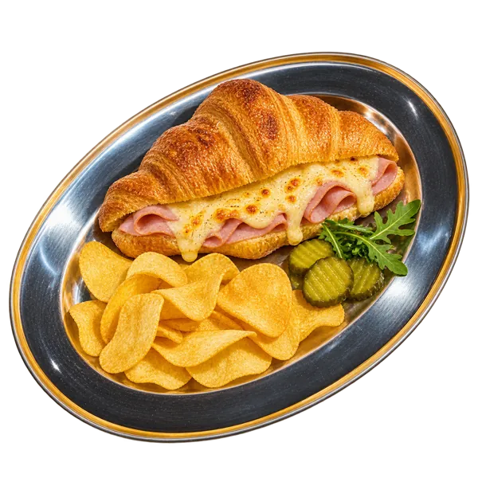
El francés se vino arriba
7,50 €
Llegó de París, probó el jamón york gratinado y ya no quiso volver.
Croissant de mantequilla relleno de jamón cocido y queso, gratinado al horno hasta que cruje. Lo acompañamos con patatas y pepinillos.
Ingredientes
Croissant de mantequilla
Jamón cocido
Queso emmental
Patatas chips
Pepinillos en vinagre
Alérgenos
Gluten
Leche
Huevo
Sulfitos
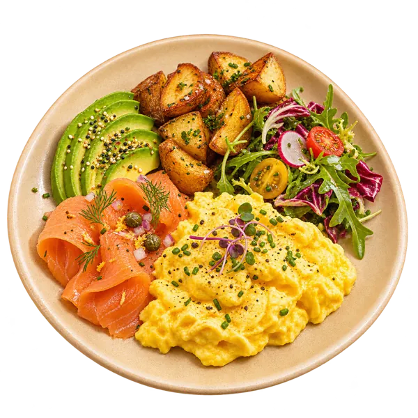
El domingo sin resaca
12,50 €
Para cuando el sábado se alargó un poquito. No preguntamos, solo servimos.
Nuestro brunch más completo: huevos revueltos cremosos, salmón ahumado, aguacate, patatas asadas y ensalada. Lo que el cuerpo pide un domingo por la mañana.
Ingredientes
Huevos revueltos
Salmón ahumado
Aguacate
Patatas asadas
Rúcula y rabanito
Tomate cherry
Mantequilla
Alérgenos
Huevo
Pescado
Leche
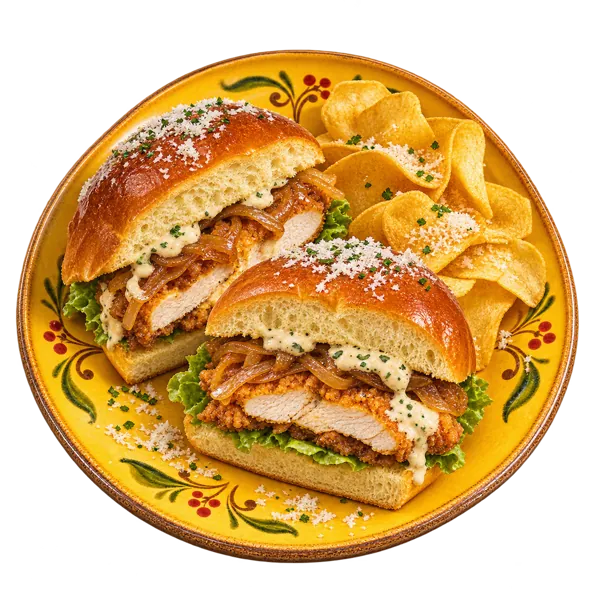
El que no iba a cenar
10,00 €
«Yo solo me tomo algo»… Ya. Te conocemos.
Pan brioche con pollo rebozado y crujiente, cebolla caramelizada y nuestra salsa de la casa. Para los que no iban a cenar y al final cenaron.
Ingredientes
Pan brioche
Pollo rebozado
Cebolla caramelizada
Lechuga
Salsa de la casa
Patatas chips
Alérgenos
Gluten
Huevo
Leche
Mostaza
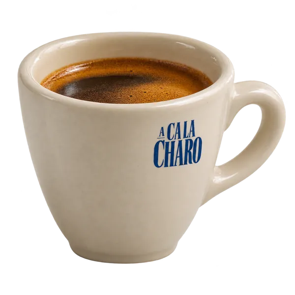
Espresso
1,80 €
Corto, intenso y sin rodeos. Como la Charo a primera hora.
Un espresso de café de especialidad, tostado en pequeños lotes. Corto, con cuerpo y con una crema que da gusto mirar.
Ingredientes
Café de especialidad 100 % arábica
Alérgenos
Sin alérgenos
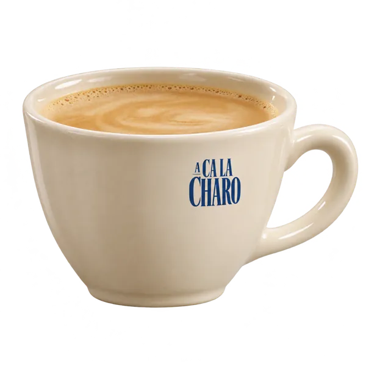
Café con leche
2,20 €
El de toda la vida. Lo pides «templadito» y te lo ponemos templadito.
El café con leche de siempre, pero con grano de especialidad. Lo puedes pedir con leche entera, desnatada o bebida de avena.
Ingredientes
Café de especialidad
Leche entera (o bebida de avena)
Alérgenos
Leche
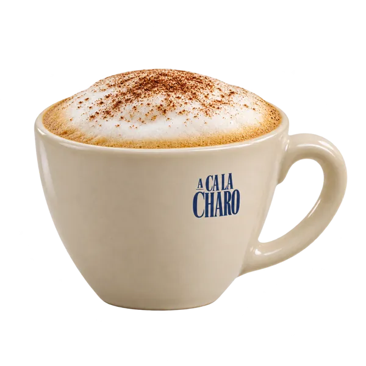
Cappuccino
2,80 €
Espuma de la buena y cacao por encima. El bigote va incluido.
Espresso, leche cremosa y una buena capa de espuma con cacao espolvoreado por encima.
Ingredientes
Café de especialidad
Leche
Espuma de leche
Cacao en polvo
Alérgenos
Leche
De la casa
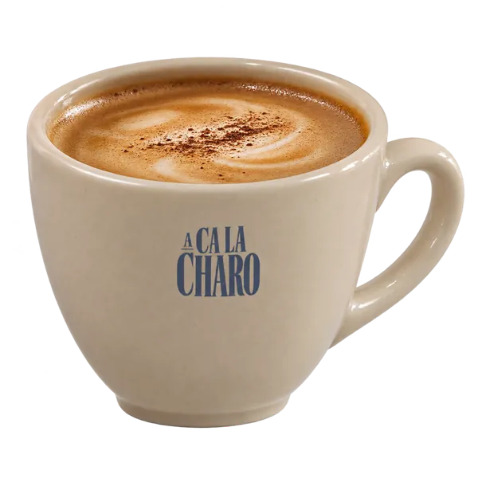
Café Charino
3,50 €
El especial de la casa. La receta es secreta y la Charo no suelta prenda.
El café de la casa: doble espresso, leche cremosa, un toque de canela y caramelo salado. Lo demás es secreto, y la Charo no lo cuenta ni bajo amenaza.
Ingredientes
Doble espresso de especialidad
Leche cremosa
Caramelo salado
Canela
Ingrediente secreto de la Charo
Alérgenos
Leche
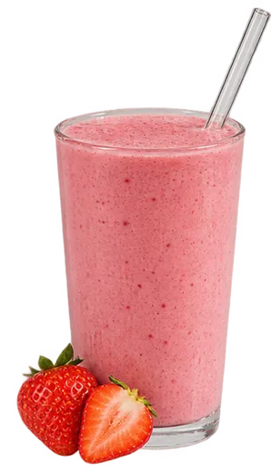
Batido de fresa
4,50 €
Fresa, leche y nada de cuentos.
Fresas naturales batidas con leche fría y un poco de yogur. Sin siropes ni colorantes: el color es todo de la fruta.
Ingredientes
Fresas naturales
Leche
Yogur natural
Miel
Alérgenos
Leche
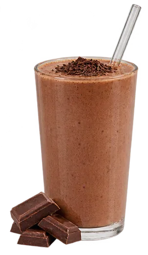
Batido de chocolate
4,80 €
Para los días que piden chocolate. O sea, todos.
Batido espeso de cacao puro y chocolate negro, con virutas por encima. De los que se toman con calma.
Ingredientes
Leche
Cacao puro
Chocolate negro
Nata
Virutas de chocolate
Alérgenos
Leche
Soja
Batido de plátano
4,50 €
El plátano de toda la vida, ahora con pajita.
Plátano maduro batido con leche y un toque de canela. Suave, dulce y perfecto para merendar.
Ingredientes
Plátano
Leche
Canela
Miel
Alérgenos
Leche
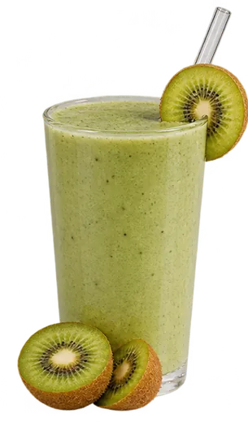
Batido de kiwi
4,80 €
Verde, fresco y con más vitaminas que tu zumo de la mañana.
Kiwi, manzana verde y un poco de lima, batidos con yogur. Ácido, fresco y muy verde.
Ingredientes
Kiwi
Manzana verde
Lima
Yogur natural
Alérgenos
Leche
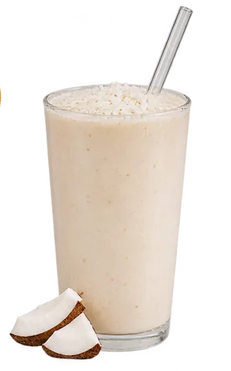
Batido de coco
4,80 €
Un viaje al Caribe sin salir del barrio.
Leche de coco, plátano y coco rallado por encima. Cierra los ojos y estás en la playa (abre los ojos y estás en El Carmen).